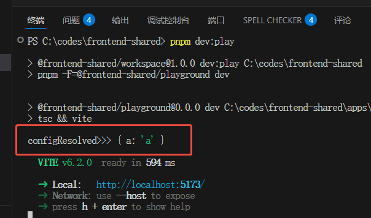
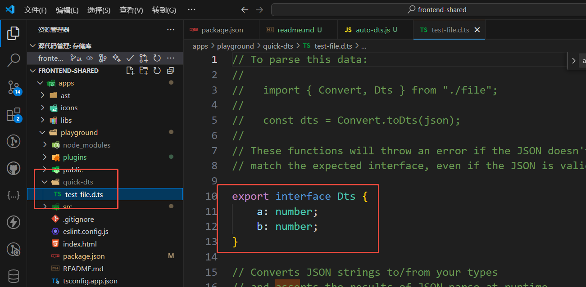
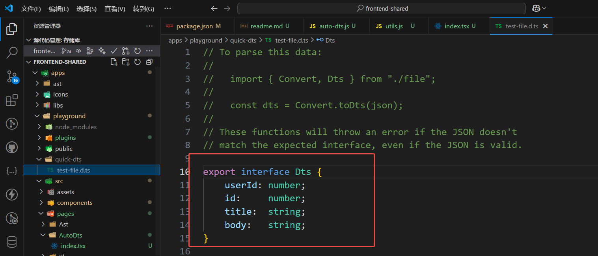

目录 (Table of Contents)
[TOCM]
[TOC]
本文简介：
编写一个 vite 插件，使其在 dev server 时能自动根据接口 response json 生成 dts 文件，涉及到的知识点：
tips:
node: v20+
最终代码在 main 分支
运行 playground demo：
pnpm i
pnpm dev:play
以上至少都需要一个 copy json 到某个地方的步骤，下面用quicktype进一步简化该流程。
给 dev server 写个接口，把数据作为 post 参数传进去，把生成的内容写进 dts 文件即可。
新建 plugins/auto-dts.ts 并写些模板代码
export default (options) => {
return {
name: "vite-plugin-auto-dts",
apply: "serve",
configResolved() {
console.log("configResolved>>>", options);
},
};
};
在 vite.config.ts 中使用：
run "pnpm dev:play", 控制台能看到 log：

configureServer 钩子可给 vite server 写中间件
export default (options) => {
return {
name: "vite-plugin-auto-dts",
apply: "serve",
configResolved() {
console.log("configResolved>>>", options);
},
configureServer(server) {
return () => {
server.middlewares.use((req, res, next) => {
if (req.method.toLowerCase() === "post" && req.url === "/test") {
res.setHeader("Content-Type", "application/json;charset=utf-8");
let body = "";
req.on("data", (chunk) => {
body += chunk.toString();
});
req.on("end", () => {
console.log("end body>>>", body);
res.statusCode = 201;
res.end(body);
next();
});
} else {
next();
}
});
};
},
};
};
上面写一个 /test 的 post 请求，并打印传进来的 body，
然后在页面尝试请求：
fetch("/test", {
method: "post",
body: JSON.stringify({ a: 1, b: 2 }),
});
控制台会打印出 body 参数：

我们需要确保参数能被 json.parse 处理。
export function isJson(str) {
if (typeof str == "string") {
try {
JSON.parse(str);
return true;
} catch (e) {
console.log("Json parse error：" + str + "!!!" + e);
return false;
}
}
return false;
}
export function isObj(obj) {
return Object.prototype.toString.call(obj) === "[object Object]";
}
export function validBodyString(data) {
let errMsg = "";
if (!isJson(data)) {
errMsg = "data must be an json string";
}
const jsonData = JSON.parse(data);
if (!isObj(jsonData)) {
errMsg = "data must be an object";
}
return errMsg;
}
// ...
req.on("end", () => {
console.log("end body>>>", body);
const errMsg = validBodyString(body);
if (errMsg) {
res.statusCode = 400;
res.end(errMsg);
} else {
res.statusCode = 201;
res.end("Auto gen dts success");
}
next();
});
//...
root path 正常情况是用户项目根目录，但如果要作为 npm 包发布，
由于最终代码在 node_modules 中，所以需要确保生成的文件路径是基于用户根目录的。
首先设定默认 options：
const DefaultOptions = {
// dts文件生成目录
outputDir: "/quick-dts",
// 已有同名文件是否覆盖
cover: false,
// 前端接口路径
routePath: "/gen-dts",
};
auto-dts.ts:
// ...
export default (options = {}) => {
const finalOptions = { ...DefaultOptions, ...options };
let root = getDirname();
return {
name: "vite-plugin-res-to-dts",
apply: "serve",
configResolved(config) {
// 这样就能确定root指向用户根目录
console.log("configResolved>>>", config.root);
root = config.root;
},
};
};
//...
//...
// 为简化这里写死，实际需要用户自己传过来
const fileKey = "test-file";
const destPath = join(root, finalOptions.outputDir, `${fileKey}.d.ts`);
if (!finalOptions.cover) {
const isExit = await pathExists(destPath);
if (isExit) {
end();
next();
return;
}
}
//...
// ...
try {
const result = await genType(body);
// console.log("quicktype res>>>", result);
if (result) {
await outputFile(destPath, result, {
flag: "a",
});
res.statusCode = 201;
res.end("Auto gen dts success");
} else {
res.statusCode = 400;
res.end("Auto gen dts fail");
}
} catch (error) {
res.statusCode = 400;
res.end(error.message);
} finally {
next();
}
// ...
async function genType(data) {
const jsonInput = jsonInputForTargetLanguage("TypeScript");
await jsonInput.addSource({
name: "dts",
samples: [data],
});
const inputData = new InputData();
inputData.addInput(jsonInput);
const { lines } = await quicktype({
inputData,
lang: "TypeScript",
});
if (lines?.length) {
let str = "";
for (const line of lines) {
str += `${line}\r\n`;
}
return str;
}
return "";
}
然后重启服务并调接口，会在项目根目录生成 /quick-dts/test-file.d.ts：

const onClick = () => {
fetch("https://jsonplaceholder.typicode.com/posts")
.then((res) => res.tson())
.then((res) => {
fetch("/gen-dts", {
method: "POST",
body: JSON.stringify(res),
});
});
};
